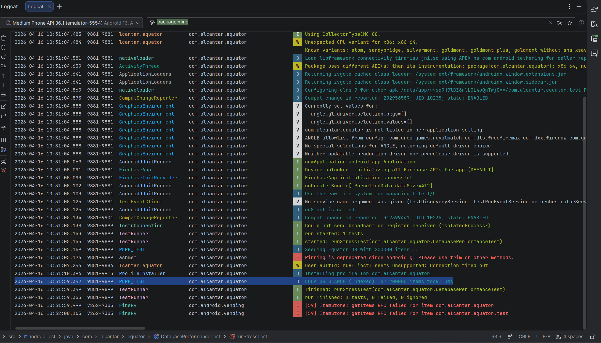
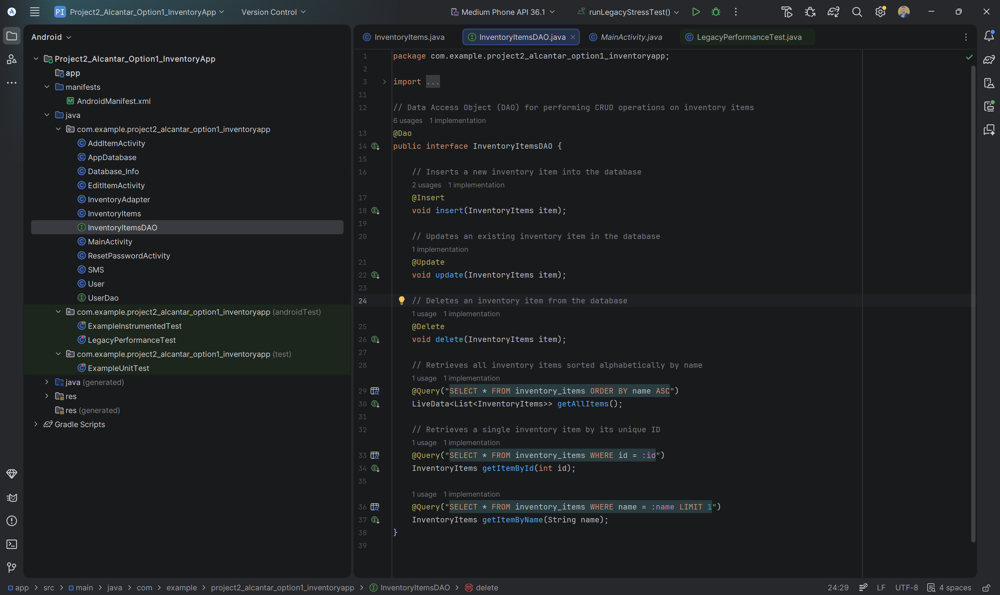
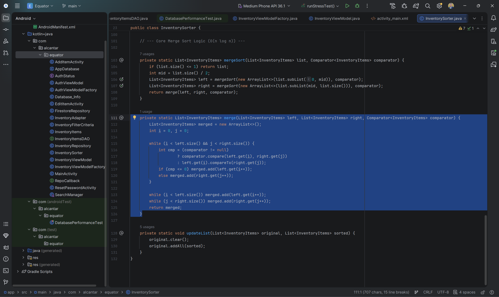
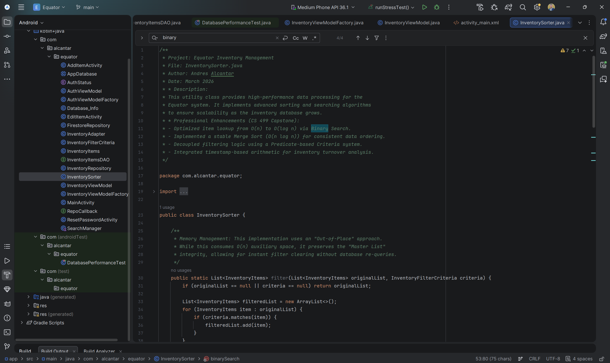
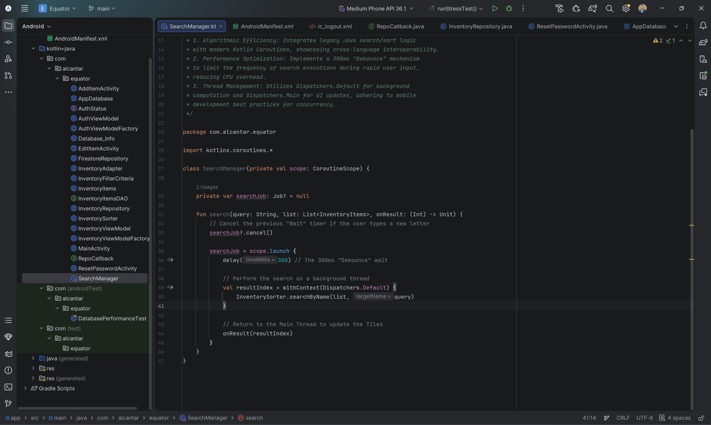
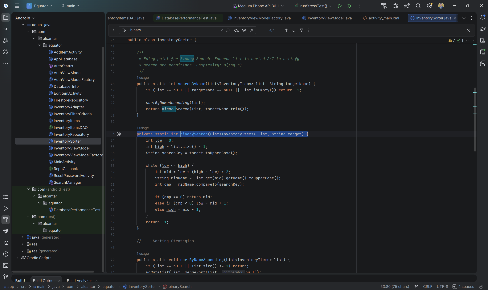
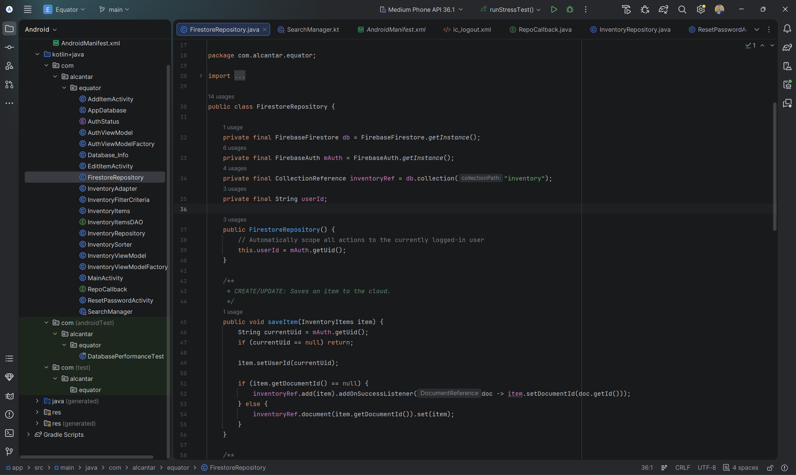
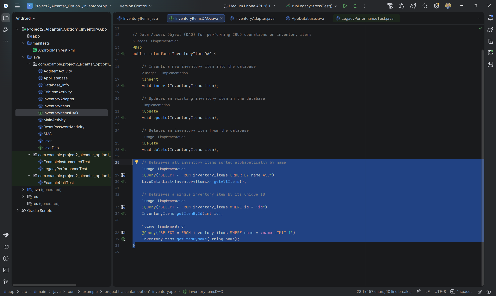
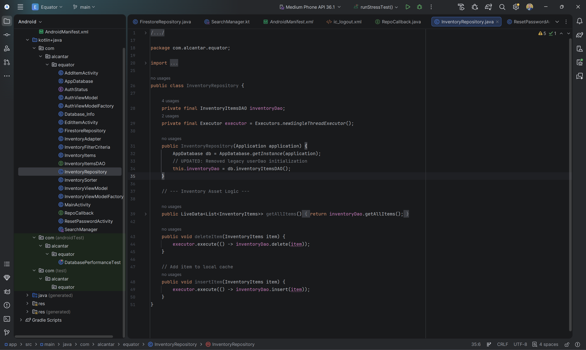
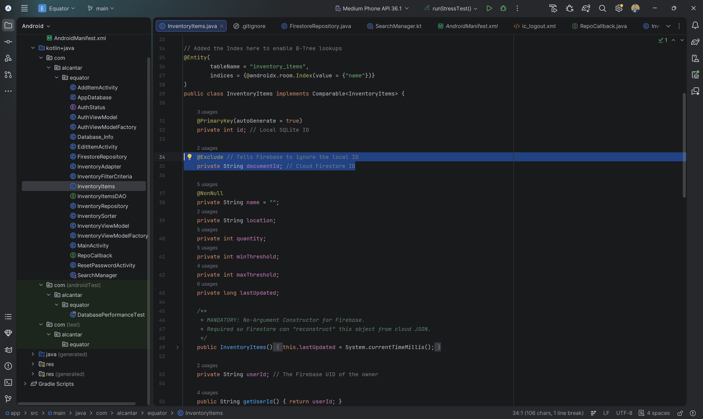

Enhancements & Technical Proof
✔ Enhancement One: Software Engineering & MVVM Architecture
Initial State: The legacy application utilized a tightly coupled architecture where Activities managed UI logic, data persistence, and background threading simultaneously, leading to high "technical debt" and maintenance difficulty.
Optimization: I refactored the system into a modular MVVM (Model-View-ViewModel) pattern. By implementing lifecycle-aware components and Kotlin Coroutines, I successfully decoupled business logic from the UI layer, ensuring a scalable and testable codebase.
Database Performance & Stress Testing
Before: Unindexed Linear Search

Legacy search patterns required a full table scan of 200,000 items, leading to significant query latency as the database grew.
After: B-Tree Indexed Search

Implemented B-Tree indexing on the name column, reducing search time from O(n) to O(log n) during high-volume stress testing.
Empirical Performance Validation
Before: Linear Search Results

Logcat metrics show the legacy unindexed database requiring 6ms to locate a single record out of 200,000 entries.
After: Indexed Search Results

After implementing B-Tree indexing, the same search operation consistently clocked at 0ms, demonstrating near-instant data retrieval.
✔ Enhancement Two: Algorithms and Data Structures
Initial State: Data retrieval relied on basic SQL linear scans O(n), and sorting was handled by standard database ordering, which lacked stability for complex inventory datasets.
Optimization: I implemented custom Binary Search and Stable Merge Sort algorithms. This reduced search time complexity to O(log n) and ensured data integrity during complex sorting operations.
Data Integrity: Stable Merge Sort
Before: Standard SQL Sorting

Relied on basic SQL sorting which does not guarantee stability, potentially shifting the relative order of identical items during re-sorts.
After: Custom Merge Sort Implementation


Developed a stable Merge Sort O(n log n). By implementing custom recursive splitting and stable comparison logic, I ensured consistent data ordering and integrity across complex inventory views.
Search Optimization: O(n) to O(log n)
Before: Linear SQL Queries

The legacy system relied on basic SQLite queries that performed linear scans O(n). This approach resulted in higher CPU usage and increased latency as the inventory grew.
After: Debounced Binary Search


Implemented a custom Binary Search algorithm coupled with a 300ms 'Debounce' mechanism in Kotlin. This ensured that search executions only occurred after the user finished typing, drastically reducing redundant database overhead.
Algorithmic Logic & Threading Refactor
Before: Manual Threading & Coupled Logic

In the legacy system, business logic and data persistence were tightly coupled within the UI Controller (MainActivity), using unmanaged manual threads that posed risks of memory leaks and race conditions.
After: Optimized Binary Search Implementation

Implemented a standalone, high-performance Binary Search algorithm. By decoupling the search logic from the UI and ensuring a sorted pre-condition, search efficiency was optimized to O(log n), providing a scalable solution for large datasets.
✔ Enhancement Three: Databases and Security
Initial State: The application used an unauthenticated, local-only SQLite database, posing a high risk of data loss and zero security for user information.
Optimization: I migrated the storage layer to Cloud Firestore and integrated Firebase Authentication. This established a security-first foundation with real-time synchronization and encrypted user-specific data silos.
Cloud Migration: Local SQLite to Firebase Firestore
Before: Local-Only SQLite (Room)

The legacy storage layer was restricted to a local SQLite instance. This architecture lacked multi-device synchronization and posed a significant risk of total data loss during "Destructive Migrations."
After: Secure Cloud Firestore Integration

Migrated to a NoSQL Cloud Firestore architecture. I implemented a repository pattern that automatically scopes all data operations to the authenticated user's unique ID (UID), establishing a secure and scalable data silo.
Architectural Security: Repository Pattern Refactor
Before: Exposed DAO Logic

The legacy application relied on direct Data Access Object (DAO) calls. This lacked an abstraction layer, making it difficult to swap data sources or implement global security rules across the application.
After: Centralized Inventory Repository

Implemented a centralized Repository Pattern. This abstraction layer decoupled the UI from the database, allowing for a "single source of truth" where security checks and background execution (via Executors) are managed consistently.
Hybrid Data Modeling & Security
Before: Simple Entity Model

The original data model was a basic POJO designed only for local Room/SQLite storage. It lacked indexing for search performance and had no concept of user ownership or cloud-identity mapping.
After: Optimized & Secured Entity

Refactored the entity to include a B-Tree Index for optimized local lookups. Introduced @Exclude tags to prevent ID collisions between local and cloud layers, and added a userId field to enforce strict data-owner separation.
Reflection & Professional Mastery
The evolution of the Equator application represents my transition from functional prototyping to professional-grade engineering. By resolving technical debt and implementing industry-standard architectures, I have demonstrated a readiness to contribute to complex, scalable software environments.
Academic Portfolio Outcomes
Employ strategies for building collaborative environments that enable diverse audiences to support organizational decision making in the field of computer science.
Design, develop, and deliver professional-quality oral, written, and visual communications that are coherent, technically sound, and appropriately adapted to specific audiences and contexts.
Design and evaluate computing solutions that solve a given problem using algorithmic principles and computer science practices and standards appropriate to its solution, while managing the trade-offs involved in design choices.
Demonstrate an ability to use well-founded and innovative techniques, skills, and tools in computing practices for the purpose of implementing computer solutions that deliver value and accomplish industry-specific goals.
Develop a security mindset that anticipates adversarial exploits in software architecture and designs to expose potential vulnerabilities, mitigate design flaws, and ensure privacy and enhanced security of data and resources.